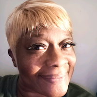

Sandra Cooper | WDD 130
 Hello, my name is Sandra Cooper, and I am proud to call Freeport, Grand Bahama, The Bahamas
my home. I have always been someone who thrives on creativity and learning, and that passion
has led me to pursue a path in Software Development. I'm currently studying online through
BYU-Idaho's PathwayConnect program, working toward expanding my skills and exploring the
many ways technology and creativity can come together.
Art has always been a meaningful part of my life. I find joy and peace in charcoal drawing,
watercolor painting, and sketching with various pencil shades, each medium allowing me to
express different layers of thought and emotion. Whether it's the soft smudges of charcoal or
the gentle flow of watercolor, creating art has helped me see the beauty in both simplicity and
detail. I hope to bring that same artistic energy into the software I build, crafting digital
experiences that are not only functional but also thoughtfully designed and inspiring.
Beyond my personal goals, I have a genuine desire to help others grow and thrive. Whether it's
through encouragement, sharing knowledge, or simply listening, I believe we all have something
valuable to offer. I don't know exactly what the future holds, but I choose to place my trust in
the One who does. With faith as my foundation and creativity as my compass, I'm excited for what
lies ahead in the world of software development and beyond.